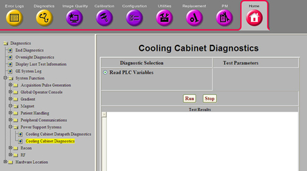

Operating Documentation
Direction 5670000, Rev# 1
Optima MR450w 1.5T Service Methods
Module Version 3.0, Version Date 8/19/08
Operating Documentation |
Diagnostics >> System Function >> Power Support Systems >> Cooling Cabinet Diagnostics
Diagnostics >> Hardware Location >> Heat Exchange Cabinet >> Cooling Cabinet Diagnostics
Illustration 1: Cooling Cabinet Diagnostics

The Cooling Cabinet Diagnostics will display the current values for both the alarm signals and feedback variables from the PLC in the Heat Exchanger Cabinet (HEC).
The alarm signals are related to the signals from the HEC to log an error message and to inhibit scanning if the alarm is a fault level signal.
PLC Heat Exchanger Cabinet (HEC)
None
Click [Run].
The test results will display below.
The following table indicates specific alarms. If an alarm is present, there will be a corresponding error message in the system log from when the alarm was asserted.
Table 1: Alarms
| Error Message | Meaning |
| cust_coolant_temp_low_alarm | Customer Coolant Temperature |
| cust_coolant_temp_high_warning | Customer coolant high warning |
| cust_coolant_temp_high_alarm | Customer coolant high |
| cust_coolant_press_low_alarm | Customer coolant pressure low |
| cust_coolant_press_high_alarm | Customer coolant pressure high |
| cust_coolant_press_diff_low_limit_alarm | Customer coolant pressure differential low |
| cust_coolant_return_press_low_alarm | Customer coolant return pressure low |
| cust_coolant_return_press_high_alarm | Customer coolant return pressure high |
| cust_coolant_reversed_flow_alarm | Customer coolant reversed flow |
| grad_coolant_temp_low_alarm | Gradient coil coolant temperature low |
| grad_coolant_temp_high_alarm | Gradient coil coolant temperature high |
| grad_coolant_press_low_alarm | Gradient coil coolant pressure low |
| grad_coolant_press_high_alarm | Gradient coil coolant pressure high |
| grad_coolant_flowrate_low_warning | Gradient coil coolant flowrate low warning |
| grad_coolant_flowrate_low_alarm | Gradient coil coolant flowrate low |
| grad_coolant_flowrate_high_alarm | Gradient coil coolant flowrate high |
| grad_coolant_resist_low_warning | Gradient coil coolant resistivity low warning |
| grad_coolant_resist_low_alarm | Gradient coil coolant resistivity low |
| grad_coolant_reservoir_low_warning | Gradient coil reservoir low warning |
| grad_coolant_reservoir_low_alarm | Gradient coil reservoir low |
| xgd_coolant_temp_low_alarm | XGD coolant temperature low |
| xgd_coolant_temp_high_alarm | XGD coolant temperature high |
| xgd_coolant_tempchange_high_alarm | XGD coolant temperature change high |
| xgd_coolant_press_low_alarm | XGD coolant pressure low |
| xgd_coolant_press_high_alarm | XGD coolant pressure high |
| xgd_coolant_flowrate_low_warning | XGD coolant flowrate low warning |
| xgd_coolant_flowrate_low_alarm | XGD coolant flowrate low |
| xgd_coolant_flowrate_high_alarm | XGD coolant flowrate high |
| xgd_coolant_reservoir_low_warning | XGD coolant reservoir low warning |
| xgd_coolant_reservoir_low_alarm | XGD coolant reservoir low |
| rf_air_temp_low_alarm | RF Air temperature low |
| rf_air_temp_high_warning | RF Air temperature high warning |
| rf_air_temp_high_alarm | RF Air temperature high |
| rf_air_velocity_low_alarm | RF Air velocity low |
| rf_air_velocity_high_alarm | RF Air velocity high |
| cryo_flowrate_low_alarm | Cryogen flowrate low |
| cryo_flowrate_high_alarm | Cryogen flowrate high |
The following table defines the name and units for each of the feedback variables:
Table 2: Feedback Variables
| Variable | Definition | Units |
| rf_temps | RF Air temperature set point | 0.1 degrees C |
| cab_temp | XGD Cabinet Temperature | 0.1 degrees C |
| cab_humi | XGD Cabinet Humidity | 0.10% |
| cu_temp | Customer Coolant Temperature | 0.1 degrees C |
| gr_temp | Gradient coil coolant temperature | 0.1 degrees C |
| gr_flow | Gradient coil coolant flowrate | 0.1 L/min |
| xg_temp | XGD coolant temperature | 0.1 degrees C |
| xg_flow | XGD coolant flowrate | 0.1 L/min |
| rf_temp | RF Air temperature | 0.1 degrees C |
| cr_flow | Cryogen coolant flowrate | 0.1 L/min |
| cu_press | Customer coolant pressure | 0.01 bar |
| cu_retpr | Customer coolant return pressure | 0.01 bar |
| gr_press | Gradient coil coolant pressure | 0.01 bar |
| xg_press | XGD coolant pressure | 0.01 bar |
| rf_veloc | RF Air Flowrate | cfm |
| gr_res1 | Gradient coil coolant resistivity | 0.1 kOhm cm |
| gr_res2 | Gradient coil coolant resistivity | 0.1 kOhm cm |
| gr_freq | Gradient coil coolant pump frequency | Hz |
| xg_freq | XGD coolant pump frequency | Hz |
| pe_pidcv | Power electronics PID control value | (no units) |
| xg_stat | Power electronics PID status | (no units) |
| rf_freq | RF Blower frequency | Hz |
| gc_pidcv | Gradient coil PID control value | (no units) |
| gr_stat | Gradient coil PID status | (no units) |
| at_pidcv | Air temperature PID control value | (no units) |
| rf_tstat | Blower temperature PID status | (no units) |
| af_pidcv | Air flow PID control value | (no units) |
| rf_fstat | Blower flow PID status | (no units) |
| rf_velsp | Requested air velocity | 0.1 m/s |
| rf_velac | Actual air velocity | 0.1 m/s |